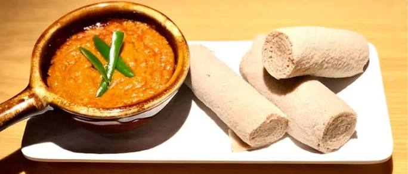

Shiro is a traditional Ethiopian dish made from powdered chickpeas or broad beans mixed with water, onions, garlic, tomatoes, and Ethiopian spices. It is slowly cooked into a smooth, thick stew with a rich and flavorful taste. Shiro is commonly served hot with injera and is a popular meal in Ethiopian households, enjoyed for lunch or dinner.